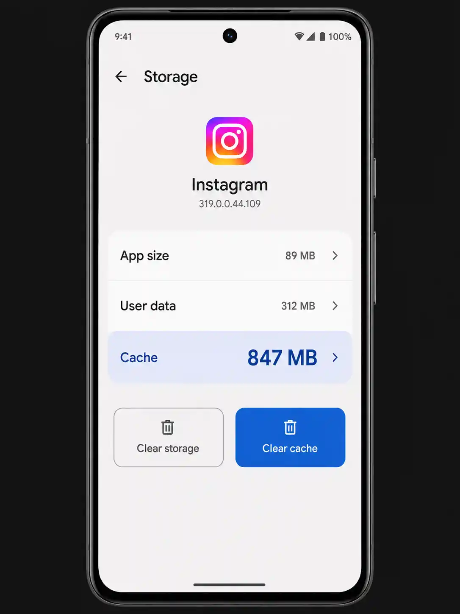
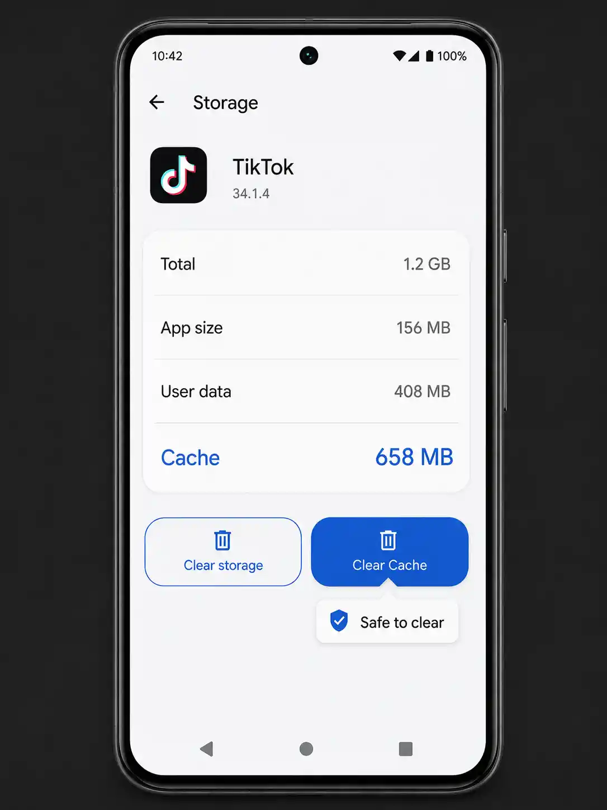

Cache vs Data — the critical difference
Every Android app has two types of stored information that appear on its settings screen. Understanding the difference before you tap anything is the single most important thing in this guide — see also Google's official guide to freeing up space on Android.
✓ Cache — always safe to clear
Temporary files the app stores to load faster — images it downloaded, data it pre-fetched, rendered content it saved to avoid re-processing. The app automatically rebuilds its cache the next time you use it. Clearing cache never deletes your account, settings, login, or content.
✗ Data — think before clearing
Everything the app has saved about you: your login session, settings and preferences, saved content, game progress, downloaded files, and app-specific data. Clearing Data resets the app to factory state — as if you just installed it fresh. You will be logged out and may lose content that isn't backed up to a cloud service.
The two buttons appear right next to each other in Settings. Clear Cache is always safe. Clear Data is a reset that removes your login, preferences, and any locally stored content. If you accidentally tap Clear Data on a banking app, messaging app, or authenticator app, you may have a serious problem. Tap the right button.

The app Storage screen shows the split between the app itself, User data, and Cache. Always tap Clear Cache — the button on the right. Never tap Clear Data unless you intend to fully reset the app.
How to clear cache for a single app
-
1
Open Settings → Apps (or Application Manager)
Samsung: Settings → Apps. Pixel: Settings → Apps. Xiaomi: Settings → Manage Apps. The name varies but every Android phone has this screen.
-
2
Tap the app you want to clear
You can scroll the list, or tap the search icon and type the app name.
-
3
Tap "Storage" → "Clear Cache"
The Cache figure will drop to 0 KB immediately. The app re-builds its cache the next time you open and use it.
In Settings → Apps, tap the three-dot menu → Sort by size. This puts the apps with the largest total storage at the top. Tap each large app and check its Cache figure — anything over 200 MB is worth clearing.
How to clear all app caches at once
The fastest way to clear caches across all apps simultaneously is to use Files by Google (free on the Play Store, pre-installed on Pixel). It identifies junk files including app caches across your entire phone in one analysis — part of the broader toolkit covered in our Android storage guide.
-
1
Open Files by Google → tap "Clean"
The app automatically scans your phone and categorises junk by type.
-
2
Tap "Junk files" → review the list
You'll see a breakdown of which apps have cached data and how much. Everything shown here is safe to delete.
-
3
Tap "Confirm and free up"
Files by Google clears the caches and shows you the total storage recovered. On a phone that hasn't been cleaned in 6–12 months, this typically recovers 1–3 GB.

Social media apps like Instagram and TikTok commonly build caches of 300 MB to 1.5 GB over a few months of regular use — clearing them takes one tap and costs nothing.
Which apps to clear first
Not all app caches are equal. Some apps aggressively cache data and grow to hundreds of megabytes quickly. Target these first for the biggest impact:
| App | What it caches | How to clear | Typical cache size |
|---|---|---|---|
| Feed images, Reels, Stories, DM media | Settings → Apps → Instagram → Storage → Clear Cache | 300 MB – 1.5 GB | |
| TikTok | Watched videos, pre-loaded content | TikTok → Profile → three lines → Settings → Clear cache, OR Settings → Apps | 200 MB – 1 GB |
| Chrome | Website images, scripts, cookies, offline pages | Chrome → three dots → Settings → Privacy → Clear browsing data → Cached images | 100 MB – 800 MB |
| Feed content, video pre-loads, Marketplace data | Settings → Apps → Facebook → Storage → Clear Cache | 200 MB – 1 GB | |
| Spotify | Streamed songs, album artwork, playlist data | Spotify → Settings → Storage → Clear Cache | 100 MB – 600 MB |
| Google Maps | Map tiles, route data, search history | Settings → Apps → Maps → Storage → Clear Cache (offline maps stay) | 100 MB – 500 MB |
| YouTube | Thumbnails, pre-loaded video segments | Settings → Apps → YouTube → Storage → Clear Cache | 100 MB – 400 MB |
| Cached media previews, temp files | Settings → Apps → WhatsApp → Storage → Clear Cache (saved media stays in Gallery) | 50 MB – 300 MB |
Apps where you should NEVER clear Data
Clear Cache on these freely. Never tap Clear Data unless you're certain you have backups:
- Google Authenticator: Clearing data deletes all your 2FA codes permanently — you could be locked out of accounts. Export codes first using the app's Transfer Accounts feature, or switch to Authy (which backs up to cloud).
- Banking apps: Most re-require you to complete identity verification from scratch. Your transaction history is safe on the bank's servers, but the setup process is tedious.
- Games without cloud saves: Many mobile games save progress locally. Check for Game Center / Play Games sign-in before clearing data.
- SMS / messaging apps: Clearing Data on your default SMS app can delete local message history that isn't backed up anywhere.
How often should you clear your app cache?
There's no fixed answer — it depends on how heavily you use certain apps. A practical approach (and if you're not sure what else to tackle, see what to delete first):
- Monthly: Run Files by Google → Clean to clear junk files across all apps. Takes 2 minutes.
- Every 3 months: Manually clear caches on the big hitters (Instagram, TikTok, Chrome) and check your overall storage breakdown.
- On demand: If an app is behaving strangely (slow to load, showing stale content), clearing its cache often fixes it — this is a debugging technique, not just a storage technique.
First of the month: open Files by Google → Clean (2 min), clear Chrome cache (1 min), check storage breakdown (1 min). Four minutes, once a month, keeps your Android phone running cleanly without ever hitting storage warnings.